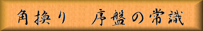

「図１」までの手順
▲２六歩 ▽８四歩 ▲２五歩 ▽８五歩 ▲７八金 ▽３二金
▲２四歩 ▽同 歩 ▲同 飛 ▽２三歩 ▲２六飛 ▽６二銀
▲４八銀 ▽３四歩 ▲７六歩 ▽８六歩 ▲同 歩 ▽同 飛
▲８七歩 ▽８二飛 ▲１六歩 ▽１四歩 ▲９六歩 ▽９四歩
▲５八金 ▽４一玉 ▲６九玉 ▽５四歩 ▲４六歩 ▽５三銀
▲４七銀 ▽５五歩 ▲３六歩 ▽５四銀 ▲６八銀 ▽４二銀
▲３七桂 ▽５二金
 |
|
||||
|
角換りの駒組みを進めて行くうえで重要な常識が一つ有ります。
それは俗に”角交換に５筋を突くな”と言われる物で、
先手なら▲５六歩、後手の場合は▽５四歩と突いてはいけないと言う事なのです。
しかしこれが常識になるには 先人達の長い闘いの歴史が有ったのです。 「図１」までの手順 ▲２六歩 ▽８四歩 ▲２五歩 ▽８五歩 ▲７八金 ▽３二金 ▲２四歩 ▽同 歩 ▲同 飛 ▽２三歩 ▲２六飛 ▽６二銀 ▲４八銀 ▽３四歩 ▲７六歩 ▽８六歩 ▲同 歩 ▽同 飛 ▲８七歩 ▽８二飛 ▲１六歩 ▽１四歩 ▲９六歩 ▽９四歩 ▲５八金 ▽４一玉 ▲６九玉 ▽５四歩 ▲４六歩 ▽５三銀 ▲４七銀 ▽５五歩 ▲３六歩 ▽５四銀 ▲６八銀 ▽４二銀 ▲３七桂 ▽５二金 | |||||
| Figure 1
|
「図１」までの手順を見て、これは角換りじゃ無くて相掛りでは無いのか、そう思われた方が多いと思います。 そうなのです、角交換での常識は元々この”相掛り新旧対抗型”から端を発しているのです。 ５筋を突いている後手側が旧型、４筋を突いている先手が新型です。 木村義雄実力制初代名人など戦前戦後の名棋士達によって指されていた物で、 当時は”相掛りに有らざれば将棋に有らず”と言われ、 振り飛車などは消極的で良い戦法では無いと思われていた時代でした。 その頃の居飛車の駒組みには序盤は奇数の歩を突けと言う事と、 ５五の位置、つまり盤の中央は天王山と言う常識が有ったのです。 それ自体は現代でも当てはまる部分が有ります。たとえば奇数の歩を突くと言うのは角と銀の動きを楽にするのが目的ですし、 ５五の位を取るのはゴキゲン中飛車等で有力な作戦なのは解説した通りです。 「図２」までの手順 ▲７六歩 ▽８四歩 ▲２六歩 ▽３二金 ▲２五歩 ▽８五歩 ▲７七角 ▽３四歩 ▲８八銀▽７七角成 ▲同 銀 ▽２二銀 ▲７八金 ▽３三銀 ▲３八銀 ▽６二銀 ▲４六歩 ▽５四歩 ▲４七銀 ▽５三銀 ▲３六歩 ▽５五歩 ▲５八金 ▽５二金 ▲１六歩 ▽１四歩 ▲９六歩 ▽９四歩 ▲６八玉 ▽４一玉 ▲３七桂 ▽４四歩 ▲６六歩 ▽５四銀 |
|||
| Figure 2
|
「図２」は（角換りパターン１）の手順から上記「図１」の新旧対抗型と同じく先手が４筋を、 後手が５筋を突いて 以下▽５五歩と、天王山である中央の位を後手が取った局面です。 「図２」から「図３」までの手順 ▲４五歩 ▽同 歩 ▲３五歩 ▽同 歩 ▲７一角 ▽８四飛 ▲３五角成 |
|||
| Figure 3
|
「図３」までは典型的な例ですが、５筋の歩が突かれていると角を打ち込む隙が出来易いのです。 新旧対抗型の相掛り戦でも研究が進むにつれ段々に旧型の５筋を突く形が不利である事が判明していき、 角交換の可能性が有る戦型では５筋の歩を突かない方が良いと言う結論になったのです。 |
|||

|
||||